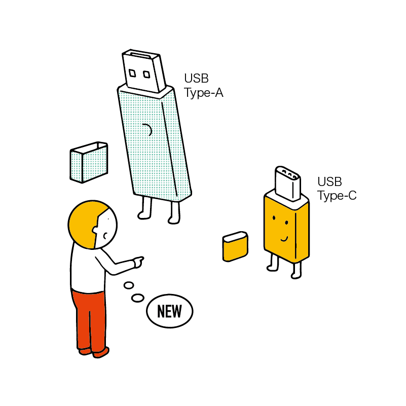

USB メモリを使ってみよう
学校や職場で他の人とデータをやり取りする際、USB メモリを使うことがあります。また、コンビニなどに設置されているコピー機も USB メモリのデータを読み取られます。 今回は USB メモリの使い方をマスターし、データをスムーズに交換できるようになりましょう。
USB メモリとは
USB（ユーエスビー）という規格を利用して接続する記録装置です。USB フラッシュドライブ などとも呼ばれます。また、USBメモリのことを「USB」と略すこともありますが、USBは通信する規格や端子自体のことなので正確な略称ではありません。
パソコンから容易に抜き差しできるため、データの交換によく用いられます。
ただし、記録装置の性質上、長期間の保存には向いていません（数年程度で寿命となり、保存したデータが消えてしまう恐れがあります）。そのため、重要なデータの長期バックアップ先としては不向きといえるでしょう。一時的な保管・交換用として使用するのがおすすめです。
USB メモリの選び方
家電量販店やネット通販で入手できます。また、割高にはなりますがコンビニなどでも購入できることがあります。
様々なものがあるので選び方を知っておきましょう。
メーカー
非常に多くの会社が USB メモリを製造・販売しています。データやパソコンを壊さないためにも、できるだけ信頼できるメーカーの商品を選びましょう。
もし迷った場合、大手家電量販店で販売されているものを購入すれば安全といえるでしょう。
容量
必要な容量は用途によって変わります。学校や会社での書類データを保存するなら、 8 GB程度あれば十分でしょう。
しかし、動画や画像を多く保存する場合は 16GB や 32GB など、なるべく大容量のものを買うほうが良いでしょう。
USB の規格
USB のバージョンによって通信速度（データの読み書きの速度）が変わります。
USB 2.0 の製品より、USB 3.0（USB 3.1、USB 3.2）に対応した製品の方が高速にデータの読み書きができます。
端子
USB には端子の種類がいくつかあります。
USB メモリでよく使われるのは長方形の端子（USB タイプA）と小型の端子（USB タイプC）です。
タイプA が最も基本的なタイプ（いわゆる普通の USB 端子）なので、タイプAのものは特に何も記載されていない事が多いようです。
基本的には タイプA を選ぶと良いでしょう。
なぜなら、ほとんどのパソコンに タイプA の端子は搭載されており、データの交換をするときに利便性が高いからです。
ただし、MacBook シリーズは基本的に タイプC 端子しか搭載していません。
こうした場合は Mac 側に、タイプC と タイプA を変換するアダプタを購入して挿し込むとよいでしょう。
人とデータを交換するのではなく、MacBook でしか利用しない場合は変換の手間を省くために タイプC の USB メモリを選んでも大丈夫です。しかし、流通している USB メモリのほとんどは タイプA 端子のものであるため、変換アダプタは持っておいた方が便利です。
変換用アダプタは家電量販店やネット通販で入手できます。また、Apple も公式で販売しています。
デザイン・形状・サイズ
デザインや形状が性能に影響することはないので、好きなものを選びましょう。
ただし、小さすぎるものは紛失しやすいので適度なサイズがおすすめです。
また、名前や用途を記入したりラベルを貼ったりしたい場合、そういうスペースが十分にあるかも確認しましょう。貸し借りを頻繁にする場合は名前などを書きやすいサイズの方が便利です。
USB メモリの使い方
USB メモリの接続
Finder を開きましょう。
USB メモリをパソコンの USB 端子に差し込みましょう。必要に応じて変換アダプタを使いましょう。
//TODO 写真
少し待つと Finder の左側に USB メモリが認識されるはずです。
環境（USB メモリの名前）によって、ここに表示される文字は変わります。
パソコンから USB メモリへデータをコピー
基本的には通常のファイル・フォルダ操作と同様です。
コピーしたいファイルやフォルダがある場所、たとえば 書類 を別のウィンドウで開きましょう。
コピーしたいファイルを 右クリック し、コピー をクリックしましょう。
移動しても良いですが、USB メモリは信頼性の高い記録装置ではないため、パソコン本体にデータを残すこと（コピー）を強くおすすめします。
Finder の左側から USB をクリックして開きます。
USB メモリが開いたら、何もない部分を 右クリック して ペースト をクリックしましょう。
ファイルが増えてきた場合、USB メモリの中にもフォルダを作って整理整頓するとよいでしょう。
USB メモリからパソコンへデータをコピー
こちらも基本的には通常のファイル・フォルダ操作と同様です。
Finder の左側から USB をクリックして開きます。
 USB を開く
USB を開く
USB メモリが開いたら、コピーしたいファイルやフォルダを 右クリック して コピー をクリックしましょう。
続いて、ファイルやフォルダをコピーしたい先（書類など）を開きます。
フォルダが開いたら、何もない部分を 右クリック して ペースト をクリックしましょう。
USB メモリの取り外し
USB メモリをいきなり取り外すと、データが消失する恐れがあります。Mac 上できちんと取り外しの操作をしましょう。
まず、USB メモリから開いたファイルをすべて閉じます。
Finder で USB メモリが表示されている部分の取り出しマークをクリックします。
Finder から USB メモリの表示が消えたら、パソコンから USB メモリを取り外します。
//TODO 写真
「取り外せません」の表示が出た場合
USB メモリに入っているファイルやフォルダを別のアプリが開いている状態では USB メモリを取り外しできません。
以下のようなメッセージが出た場合、USB メモリのファイルを開いているアプリを閉じてみてください。
すべてのアプリを閉じてもこの表示が続く場合、裏側で動き続けているアプリがファイルにアクセスしている可能性があります。 原因となるアプリが特定できないなら、一旦 Mac を終了してから USB メモリを抜きましょう。